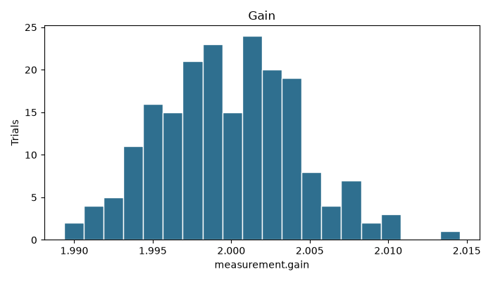

function generator / oscilloscope / DMM
Hardware validation / mcranny/hardware-verification
Full RTL co-simulation flow for signal-processing hardware.
A Python verification framework that drives Verilog implementations with generated stimulus, compares captured RTL samples against deterministic integer reference models, and keeps the same validation harness available for behavioral models and report generation.
dsp_block.v / fir_filter.v / moving_average.v
sample-valid handshakes
per-module lint targets
Monte Carlo report artifact
reports/generated
Framework layers
virtual_bench -> dut -> rtl_verificationvirtual_bench
Generates repeatable stimulus through virtual instruments before driving behavioral or Verilog-backed devices under test.
validation
Packages model and RTL checks into reusable test definitions, pass/fail results, and suite-level execution output.
monte_carlo
Runs variation trials to estimate yield and worst-case behavior for behavioral validation paths.
dut
Hosts behavioral DUTs plus a Verilog adapter so Python stimulus can drive RTL implementations through the same harness.
rtl_verification
Compares captured RTL output against deterministic integer reference models with exact equality and first-mismatch diagnostics.
reporting
Produces terminal, Markdown, CSV, and plotted report artifacts for validation and Monte Carlo summaries.
Verification flow
github.com/mcranny/hardware-verification1 / stimulus
Python tests generate signed integer stimulus and expected output from reference models.
2 / adapter
The Verilog adapter validates input ranges and writes structured stimulus for the simulation bridge.
3 / cocotb
The testbench resets RTL, drives sample-valid handshakes, records output-valid samples, and handles FIR coefficients.
4 / compare
Python compares captured RTL waveforms against exact integer reference output and reports the first mismatch.
Artifacts and commands
README.md / examples / rtlValidation example
The example builds a virtual bench, drives an amplifier DUT with a sine wave, runs gain/noise/offset checks, then executes a small Monte Carlo yield study.
python examples/run_validation.py
python examples/run_monte_carlo_report.pyRTL checks
The local flow covers DSP, moving-average, and FIR RTL with cocotb tests plus direct simulator and lint checks.
pytest tests/test_rtl_dut.py tests/test_reporting_and_rtl.py
iverilog -g2012 -tnull rtl/fir_filter.v rtl/moving_average.v rtl/dsp_block.v
verilator --lint-only --timing -Wall --top-module dsp_block rtl/dsp_block.vImplementation facts
scope-sim integration| Scope simulator dependency | The framework wraps the published scope-sim package for bench stimulus and also supports a sibling checkout during local development. |
|---|---|
| Covered RTL behavior | Signed boundaries, negative values, saturation cases, moving-average wraparound, valid gaps, FIR coefficient writes, variable tap counts, and fixed-seed randomized streams. |
| Boundary | The project is presented as full RTL co-simulation and lint coverage, with clear boundaries around synthesis, timing closure, silicon signoff, and exhaustive formal proof. |
| Repo | https://github.com/mcranny/hardware-verification |